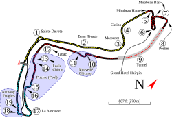
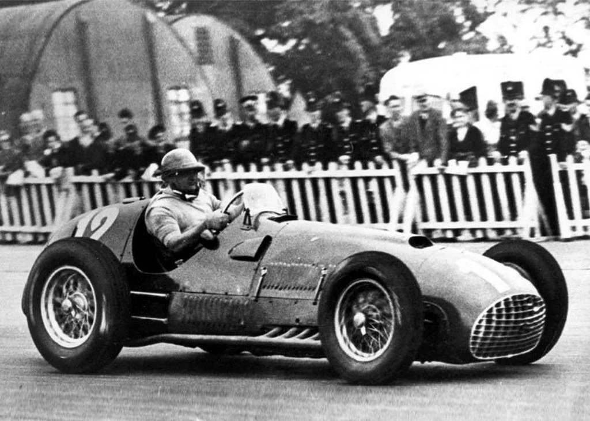
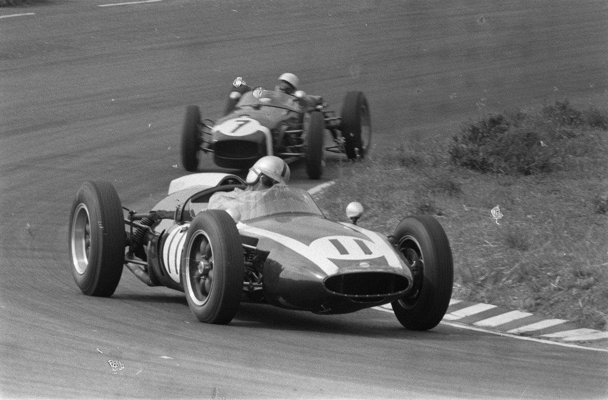
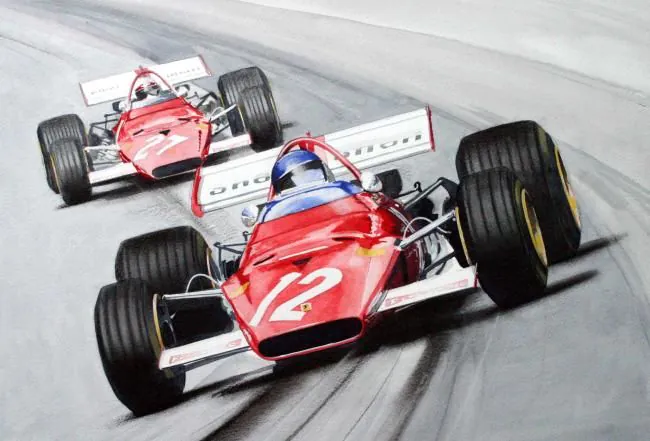
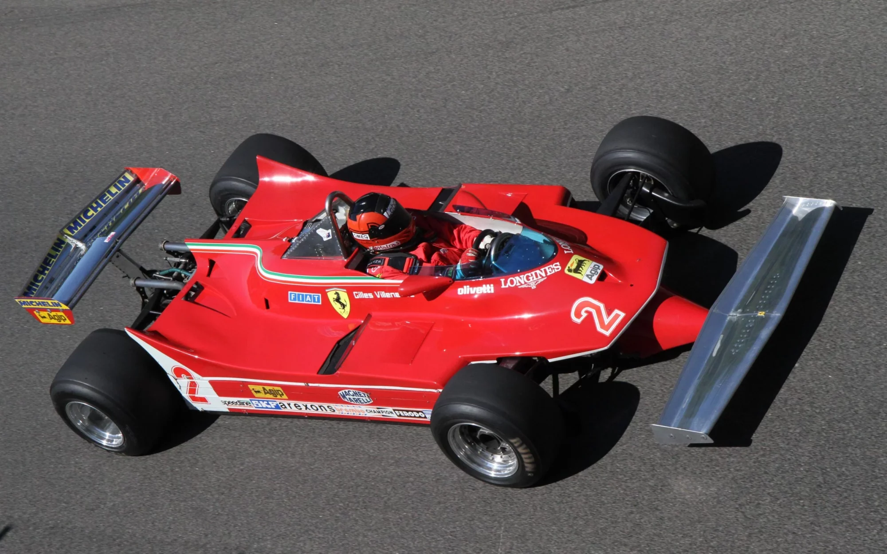
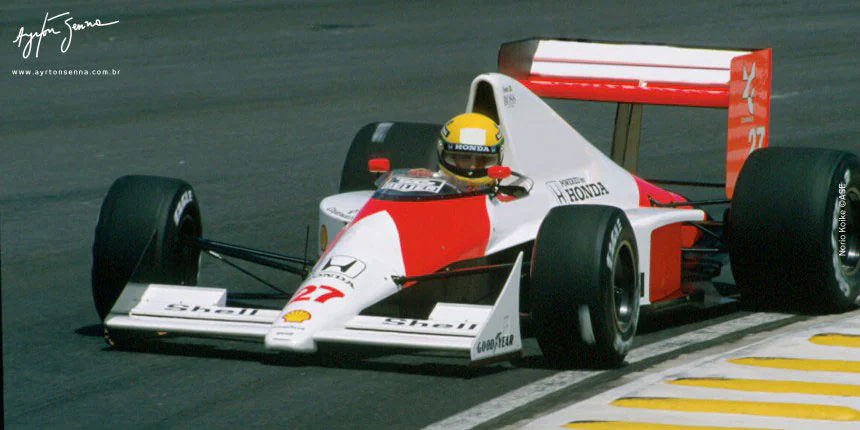
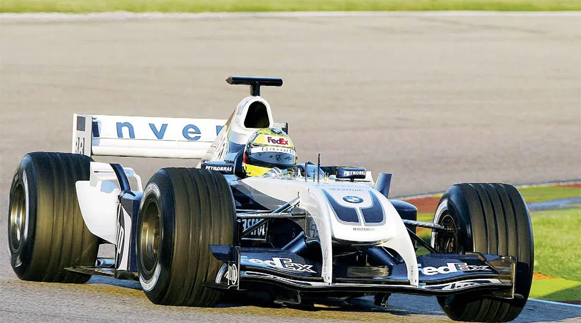
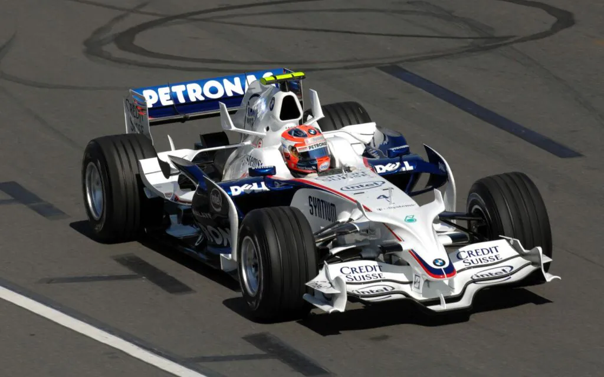
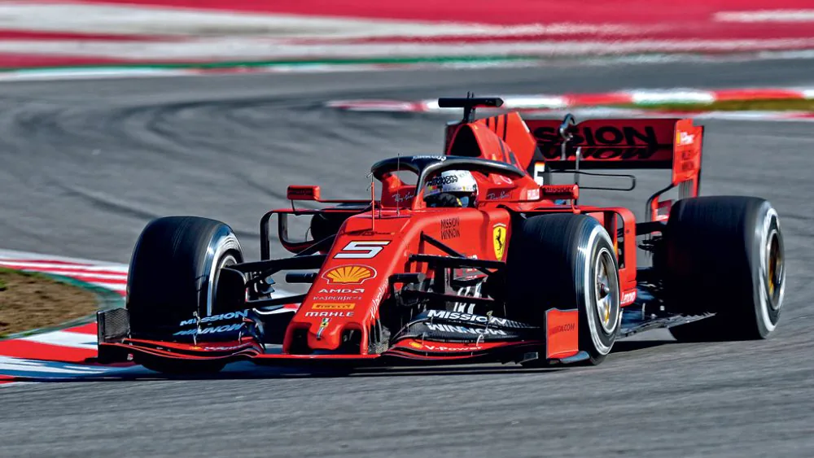
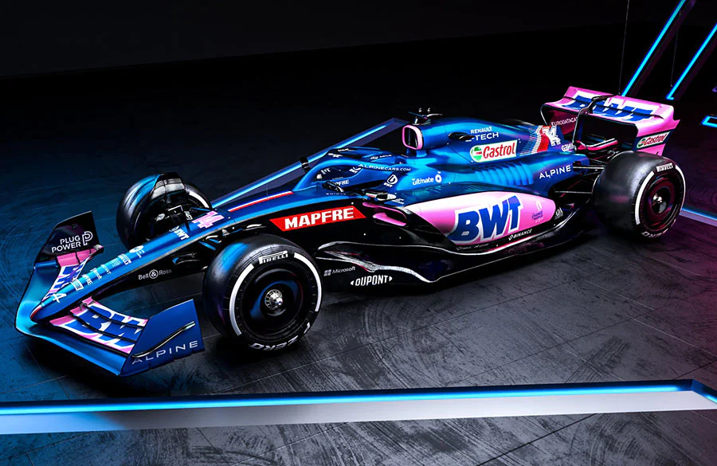

Formula 1
 Fórmula 1 (também F1; em inglês: Formula One) é a categoria
mais avançada do esporte a motor e é regulamentada pela Federação Internacional de Automobilismo. O
"Campeonato Mundial de Pilotos", que se tornou o Campeonato Mundial de Fórmula 1 da FIA em 1981, tem
sido uma das principais categorias de corrida em todo o mundo desde sua temporada inaugural em 1950.
A palavra "fórmula" no nome se refere ao conjunto de regras às quais todos os carros dos
participantes devem estar em conformidade.[2] Uma temporada de Fórmula 1 consiste em uma série de
corridas, conhecidas como Grandes Prêmios, que acontecem em todo o mundo em circuitos construídos
para esse fim e em vias públicas fechadas.
Fórmula 1 (também F1; em inglês: Formula One) é a categoria
mais avançada do esporte a motor e é regulamentada pela Federação Internacional de Automobilismo. O
"Campeonato Mundial de Pilotos", que se tornou o Campeonato Mundial de Fórmula 1 da FIA em 1981, tem
sido uma das principais categorias de corrida em todo o mundo desde sua temporada inaugural em 1950.
A palavra "fórmula" no nome se refere ao conjunto de regras às quais todos os carros dos
participantes devem estar em conformidade.[2] Uma temporada de Fórmula 1 consiste em uma série de
corridas, conhecidas como Grandes Prêmios, que acontecem em todo o mundo em circuitos construídos
para esse fim e em vias públicas fechadas.

Os circuitos da Fórmula 1 são projetados para proporcionar
corridas emocionantes e desafiadoras, cada um com suas características únicas. Aqui estão alguns dos
circuitos mais famosos e suas particularidades:
1. Circuito de Mônaco (Monte Carlo)
2. Silverstone (Reino Unido)
3. Circuito de Suzuka (Japão)
4. Spa-Francorchamps (Bélgica)
5. Autódromo José Carlos Pace (Interlagos, Brasil)
6. Circuito das Américas (EUA)
7. Yas Marina (Abu Dhabi)
8. Montreal (Canadá)
Outros Circuitos Notáveis:
Circuito de Silverstone (Reino Unido)
Nürburgring (Alemanha)
Bahrain International Circuit (Bahrain)
Cada circuito traz suas próprias particularidades e desafios, que testam não apenas as habilidades
dos pilotos, mas também a estratégia das equipes. A variedade de circuitos é uma das razões pelas
quais a Fórmula 1 é tão emocionante! Se quiser mais detalhes sobre algum circuito específico, é só
avisar!









A evolução dos carros de Fórmula 1 reflete não apenas avanços tecnológicos, mas também mudanças nas
regulamentações de segurança e a busca por sustentabilidade. Cada década trouxe inovações que moldaram o
esporte, tornando-o mais emocionante e seguro. Se quiser saber mais sobre uma era ou tecnologia específica,
é só